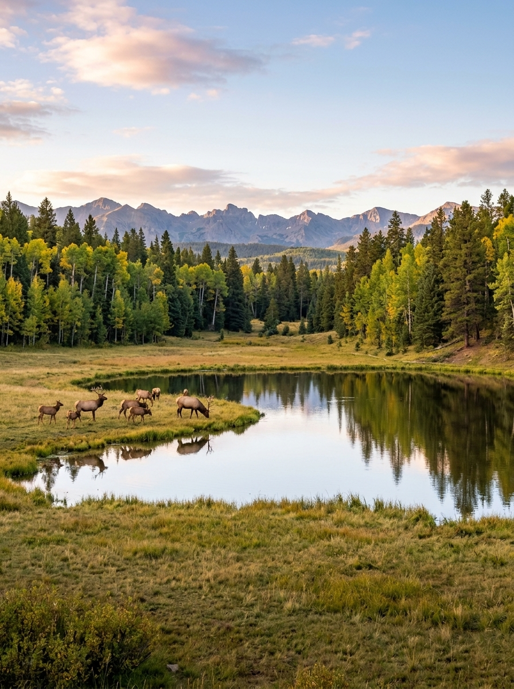

Preserving Northern New Mexico’s Wildlife. Serving Those Who Served.
Spanning 1,917 acres of high-country meadows, ponderosa timberlands, and cold-water riparian valleys in Chama, New Mexico.

Welcome to the Sanctuary
Founded by David J. O’Bryon, The D.G. Chama Sanctuary Project is built on an enduring commitment: to protect native wildlife habitats, maintain pristine catch-and-release Rio Grande Cutthroat trout waters, and provide peaceful, low-cost outdoor opportunities for disabled veterans and single-parent families.
1. Wildlife & Habitat Conservation
We actively steward 1,917 acres of high-altitude rangeland and forest to support thriving populations of native Rocky Mountain elk, mule deer, wild turkey, and upland game birds under strict non-motorized, no-predator-hunting ethics.
2. Catch-and-Release Trout Waters
Our solar-fed high-country ponds and cold-water streams are managed strictly as 100% catch-and-release fisheries with barbless, lead-free tackle to protect native Rio Grande Cutthroat trout ecosystems.
3. Veterans & Youth Outdoor Access
In partnership with military, veteran, and community organizations, we provide hosted, low-cost wildlife management hunts, three-tier adaptive fly-fishing retreats, and single-parent youth mentorships.
Founding Sponsors & Conservation Partners
We are currently inviting founding corporate sponsors, conservation foundations, and grant partners to join us in launching this landmark Northern New Mexico sanctuary.